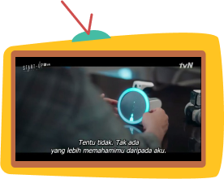
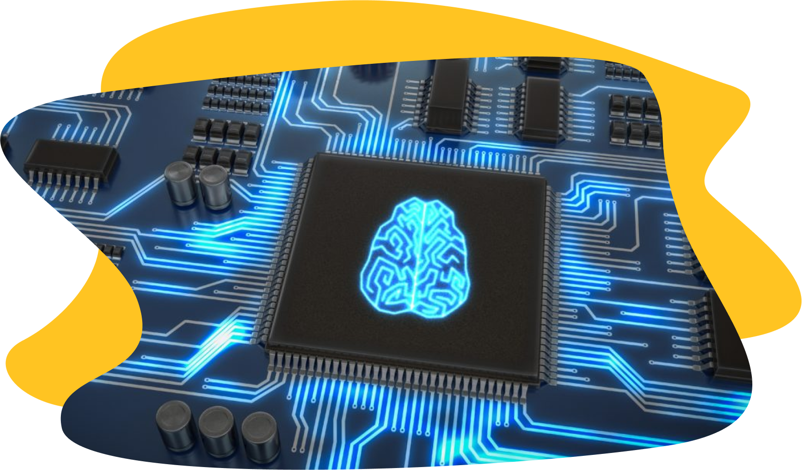

Young Sil, speaker pintar yang muncul di salah satu drama korea yang lagi viral saat ini “Start-Up”. Kehadiran speaker pintar ini sangat mencolok disetiap episode drama tersebut, pasalnya Young Sil ini selalu menjadi asisen sehari – hari bagi para tokoh di drama Start-Up.

Speaker seperti ini juga ada di dunia nyata lo, contohnya seperti Alexa, Google Home, dan masih banyak lagi |
Speaker pintar ini sangat membantu pengguna dalam kehidupan sehari – hari, untuk mengetahui perkiraan cuaca, remote perabotan rumah, bahkan bisa juga sebagai teman curhat. Semua kecanggihan yang ada dalam “Young Sil” ini dinamakan dengan teknologi AI atau disebut juga dengan Kecerdasan Buatan. |
Kecerdasan buatan atau Artificial Intelligence (AI) adalah simulasi dari kecerdasan yang dimiliki oleh manusia yang dimodelkan di dalam mesin dan diprogram agar bisa berpikir seperti halnya manusia. Sedangkan menurut Mc Leod dan Schell, kecerdasan buatan adalah aktivitas penyediaan mesin seperti komputer dengan kemampuan untuk menampilkan perilaku yang dianggap sama cerdasnya dengan jika kemampuan tersebut ditampilkan oleh manusia.

AI sendiri merupakan teknologi yang memerlukan data untuk dijadikan pengetahuan, sama seperti manusia. AI membutuhkan pengalaman dan data supaya kecerdasannya bisa lebih baik lagi. Poin penting dalam proses AI adalah learning, reasoning dan self correction. AI perlu belajar untuk memperkaya pengetahuannya. Proses belajar AI pun tidak selalu disuruh oleh manusia, melainkan AI akan belajar dengan sendirinya berdasarkan pengalaman AI saat digunakan oleh manusia.
Secara garis besar sebuah kecerdasan buatan dapat melakukan salah satu dari keempat faktor berikut.
- Acting humanly, sistem yang dapat bertindak layaknya manusia.
- Thinking humanly, sistem yang bisa berpikir seperti halnya manusia.
- Think rationally, sistem yang mampu berpikir secara rasional.
- Act rationally, sistem yang mampu bertindak secara rasional.
~rimii
Sumber Gambar : Netflix